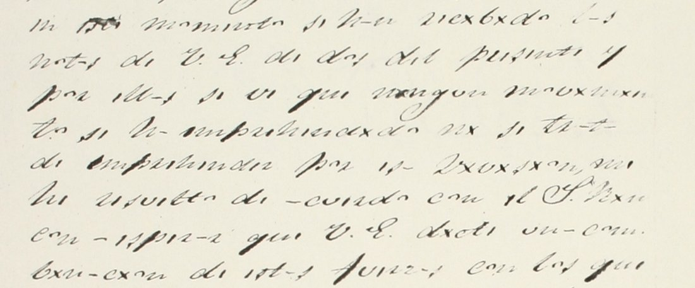

At a glanceCiphertext-only break · partial (86% of the cipher)
- The document
- A report sent from Puente Nacional (Veracruz) at seven in the evening of 6 June 1832, addressed to an officer styled “V.E.”; the text names Jalapa. The catalogue lists it as unsigned; a signature is written at the end and was not read. The setting in the 1832 civil conflict is the editor’s inference, not stated in the text.
- Where
- Centro de Estudios de Historia de México (CEHM-Carso), Fondo I-2, Manuscritos de Luis Gutiérrez Cañedo, I-2.5.340.1. The catalogue says only “En clave”; no translation.
- The cipher
- Consonants are written as they are. Each vowel is a mark: a dash for a, i for e, x for i, a dot for o; u is unchanged. The dateline is in clear.
- How it was read
- The vowel key was found from word shapes alone (comunicación, recibido, Jalapa, cinco o seis días). No key, decipherment or edition was used; none is known.
- What it says
- A section was to leave at dawn; no movement has been made or planned in that direction; the writer hopes for a combination of these forces with those leaving Jalapa; the enemy’s sudden movement apparently makes a retreat hard; resources last five or six days.
- Still open
- Line 4, parts of lines 3, 5, 8, 10, 14, 17 and 19, the last lines and the signature: cursive the single scan does not settle.
01 The page and its cipher
The leaf is one page of 22 lines in a cursive hand. At first glance it looks like heavy abbreviation, but the consonants are ordinary letters and the vowels are small marks, so each word keeps its shape: qui for que, di for de, dil for del. The dateline at the end (transcribed “Puente Nac[ional] 6 Junio de 1832 a siete de la noche”) is in plain writing.

A written x and a real letter x look alike, so próximo is pr.xxm.; the transcription marks real x as capital X. The mapping is a plain monoalphabetic vowel substitution with five values.
02 The reading
La adjunta comunicación impondrá a V.E. de que al amanecer del día de mañana debía salir la sección que oc[…] para […] […] […] […] […] la […]: más c[…] En […] momento se han recibido las notas de V.E. de dos del presente, y por ellas se ve que ningún movimiento […]s se han emprendido ni se trata de emprender por la dirección, sin […] usted de acuerdo con el S[r.] […], con esperanza que V.E. dará una combinación de estas fuerzas con los que salgan de Jalapa para poder obrar con decisión por aquí, y en la […] se dificulta[d] mucho súbito movimiento del enemigo para emprender la retira d[a] […] con V.E. próximo. Espero que se señale día […] […] estar […] la […] y que esto al presente, porque solo hay r[ecursos] para cinco o seis días y pr[…] c[…]
In English: the enclosed communication will inform Your Excellency that at daybreak tomorrow the section that oc[…] was to leave; at this moment Your Excellency’s notes of the 2nd have been received, and they show that no movement has been undertaken, nor is one planned, in that direction, without […] you being in agreement with Sr. […]; the writer hopes Your Excellency will bring about a combination of these forces with those that leave Jalapa so as to act with decision; the enemy’s sudden movement apparently makes the retreat difficult; he hopes a day will be set; there are resources for only five or six days. The doubtful and unread words are marked in the Spanish above.
The sentences are the reader’s own gloss on a mechanical decode (decode_out.txt in the repository), with gaps kept as […]. Reading review: grade B, by the model that read it; no independent Spanish reader has checked it.
03 What remains uncertain
- Line 4: five words after para are unread; only la and más c… are clear.
- Line 3 end, 5, 8, 10, 14, 17, 19: single words where the vowel marks run together. In line 10 an officer is named (el S[r.] …) and not read.
- Lines 18–22 and the signature: several words; seis días is firm and recursos is partly restored (r[icurs] plus os on the next line).
- Doubtful readings: se dificulta (the transcription has se di | ficultad, with a final d that is unexplained), retira d[a] (a word split across a line break and joined here), oc[…] (completed as “occupies” only as a guess).
- Not done: no second scan; Narváez 2008 and 2022 were not read; the sender is unidentified (the next record in the legajo, I-2.5.341.1, is a clear letter of J. A. Facio, 15 June 1832).
04 Method
The page image (1290×2278) was fetched from the CEHM viewer. Each line was read from a 2× crop, written down in the signs as seen, and decoded mechanically with a five-entry key; the decode ranks as Spanish on the project’s language models. Nothing was measured against a control, and the statistical test used for other recovered keys does not apply, since the words are not aligned to a key table. The fraction read (127 of 147 words without a [?]) is counted from the transcription file; it counts words, so a few counted as read are partly restored (r[icurs]) and a few counted as unread are partly read (oc[?]). The transcription, the decode and the reading were made by the model (Claude Sonnet 5.5) from the CEHM image.
Full texts
The transcription and the decryption of every document on this page, so that the reading can be used and checked. Short files are shown here; all are in the repository.
I-2.5.340.1 (CEHM-Carso, Fondo I-2 (Manuscritos de Luis Gutiérrez Cañedo), I-2.5.340.1, 6 Jun 1832)
A report sent from Puente Nacional, Veracruz, on the evening of 6 June 1832, to an officer styled V.E. (the text names Jalapa): a section was to leave at dawn, no movement has been made or planned in that direction, the writer hopes for a combination of these forces with those leaving Jalapa, and resources last five or six days. Setting in the 1832 civil conflict is the editor's inference.
Transcription
# CEHM-Carso I-2.5.340.1, one page, 22 lines + dateline. Signs as read: consonants plain; - . x i u = vowel marks (key in decode.py; capital X = a real letter x). [?] = not read. L1 L- -djunt- c.munxc-cx.n xmp.ndr- L2 V.E. di qui -l -m-nicir dil dx- di L3 m-ñ-n- dibx- s-lxr l- siccx.n qui .c[?] L4 p-r- [?] [?] [?] [?] [?] l- [?]: m-s c[?] L5 in [?] m.mint. si h-n ricxbxd. l-s L6 n.t-s di V.E. di d.s dil prisinti y L7 p.r ill-s si vi qui nxngun m.vxmxint. L8 [?]s si h-n imprindxd. nx si tr-t- L9 di imprindir p.r l- dxriccx.n sxn L10 [?] ustid di -cuird. c.n il S[r] [?] L11 c.n ispir-nz- qui V.E. d-r- un- c.mb L12 xn-cx.n di ist-s fuirz-s c.n l.s qui L13 s-lg-n di J-l-p- p-r- p.dir .br-r c.n L14 dicxsx.n p.r -qux y in l- [?] si dx L15 fxcult-d much. subxt. m.vxmxint. dil L16 inimxg. p-r- imprindir l- ritxr- d[-] L17 [?] c.n V.E. pr.Xxm. L18 Espir. qui si siñ-li dx- [?] L19 [?] ist-r [?] l- [?] y qui ist. L20 -l prisinti p.r qui s.l. h-y r[icurs] L21 .s p-r- cxnc. . sixs dx-s y pr[?] L22 c[?]m-s, D (dateline in clear) Puente Nac[ional] 6 Junio de 1832 a siete de la noche = [signature, not read]
Decryption
L1 La adjunta comunicacion impondra L2 V.E. de que al amanecer del dia de L3 mañana debia salir la seccion que oc[?] L4 para [?] [?] [?] [?] [?] la [?]: mas c[?] L5 en [?] momento se han recibido las L6 notas de V.E. de dos del presente y L7 por ellas se ve que ningun movimiento L8 [?]s se han emprendido ni se trata L9 de emprender por la direccion sin L10 [?] usted de acuerdo con el S[r] [?] L11 con esperanza que V.E. dara una comb L12 inacion de estas fuerzas con los que L13 salgan de Jalapa para poder obrar con L14 decision por aqui y en la [?] se di L15 ficultad mucho subito movimiento del L16 enemigo para emprender la retira d[a] L17 [?] con V.E. proximo L18 Espero que se señale dia [?] L19 [?] estar [?] la [?] y que esto L20 al presente por que solo hay r[ecurs] L21 os para cinco o seis dias y pr[?] L22 c[?]mas,
Reading
La adjunta comunicación impondrá a V.E. de que al amanecer del día de mañana debía salir la sección que oc[?] para [?] [?] [?] [?] [?] la [?]: más c[?] En [?] momento se han recibido las notas de V.E. de dos del presente, y por ellas se ve que ningún movimiento [?]s se han emprendido ni se trata de emprender por la dirección, sin [?] usted de acuerdo con el S[r] [?], con esperanza que V.E. dará una combinación de estas fuerzas con los que salgan de Jalapa para poder obrar con decisión por aquí, y en la [?] se dificulta[d] mucho súbito movimiento del enemigo para emprender la retira d[a] [?] con V.E. próximo. Espero que se señale día [?] [?] estar [?] la [?] y que esto al presente, porque solo hay r[ecurs]os para cinco o seis días y pr[?] c[?]m[?] Puente Nacional, 6 de junio de 1832, a las siete de la noche. = [signature not read]
Translation
The enclosed communication will inform Your Excellency that at daybreak tomorrow the section that oc[...] (occupies?) was to leave ... [?] ... more c[...]. At this moment the notes of Your Excellency of the 2nd of this month have been received, and from them it is seen that no movement has been undertaken, nor is one planned, in that direction, without [?] you being in agreement with Sr. [?], in the hope that Your Excellency will bring about a combination of these forces with those that leave Jalapa so as to be able to act with decision from here; and in the [?] the sudden movement of the enemy ... difficulty (the text reads "se dificultad") ... to undertake the retreat [?] with Your Excellency near. I hope that a day will be set [?] ... and this at present, because there are only resources (?) for five or six days and [?] ... Puente Nacional, 6 June 1832, seven in the evening (as transcribed: "a siete de la noche").
Key: key.tsv
05 Sources
- CEHM-Carso, I-2.5.340.1 (catalogue record 33470).
- Prior art searched on 9 November 2026: DECODE (no record), the project’s catalogue and leads, one web search on the 1832 rising and Puente Nacional; nothing found.
Transcription, decode, key and notes are in the repository folder.
Cite this page
Daniel Bourdeau, “Puente Nacional report, 6 June 1832”, Cyphersolver, posted 9 November 2026, https://cyphersolver.com/puente1832.html.